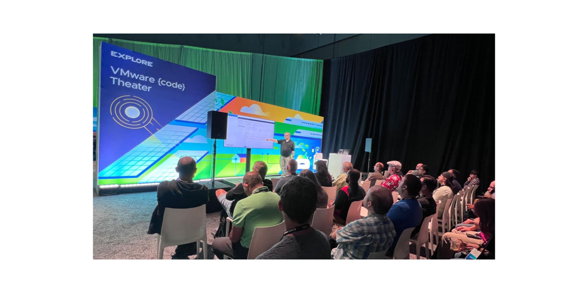
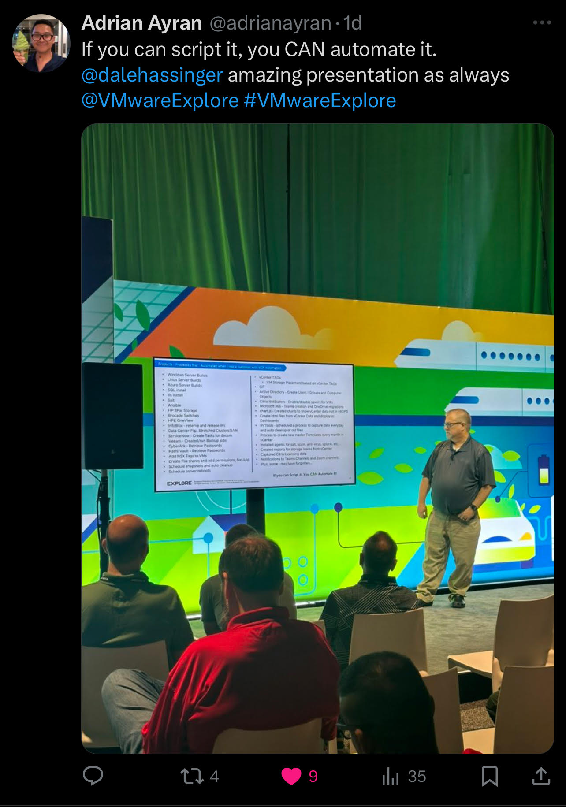
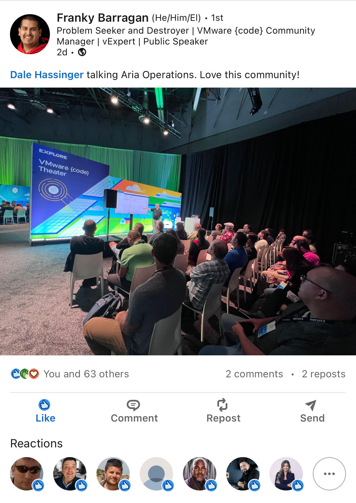
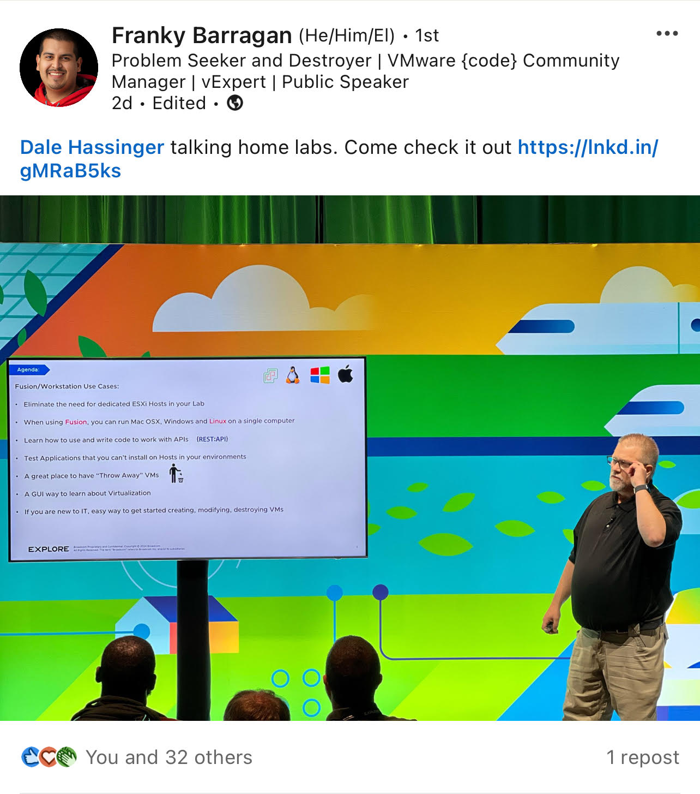
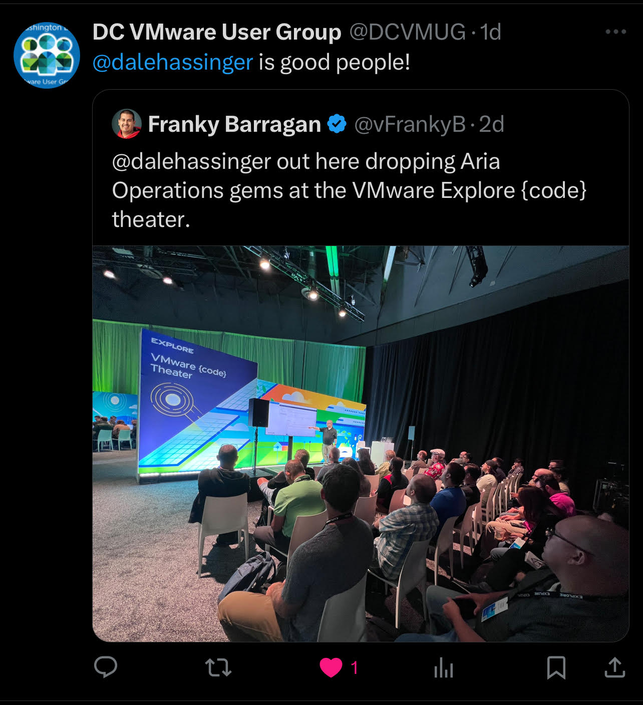
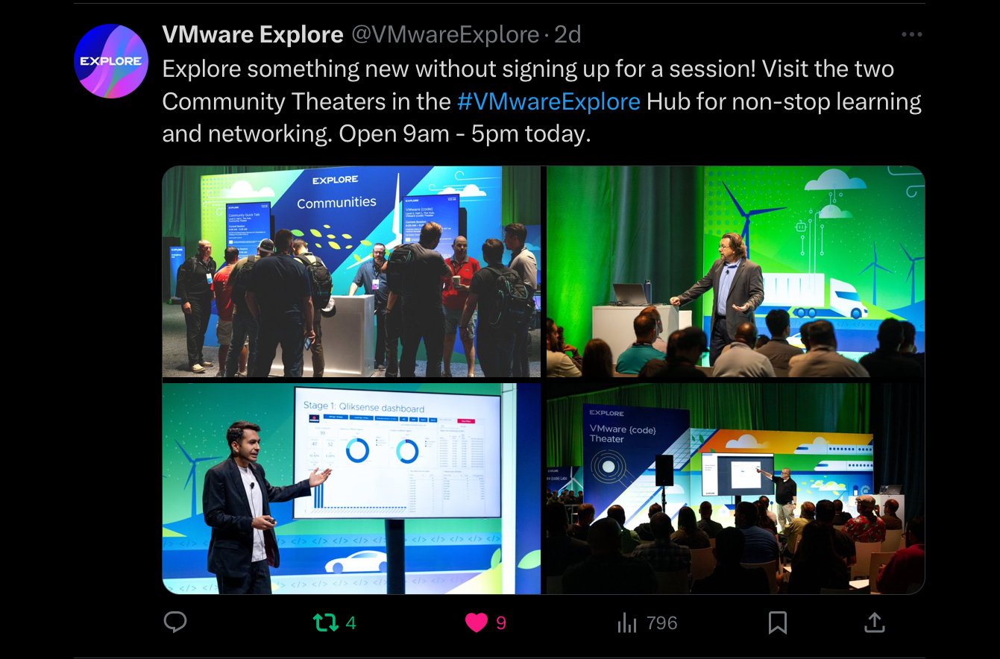
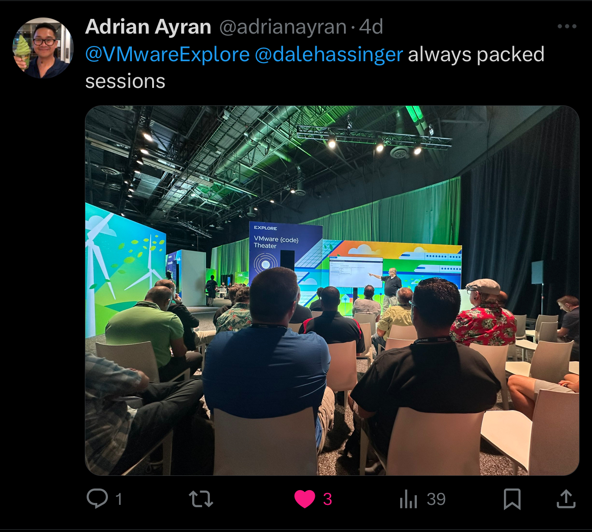
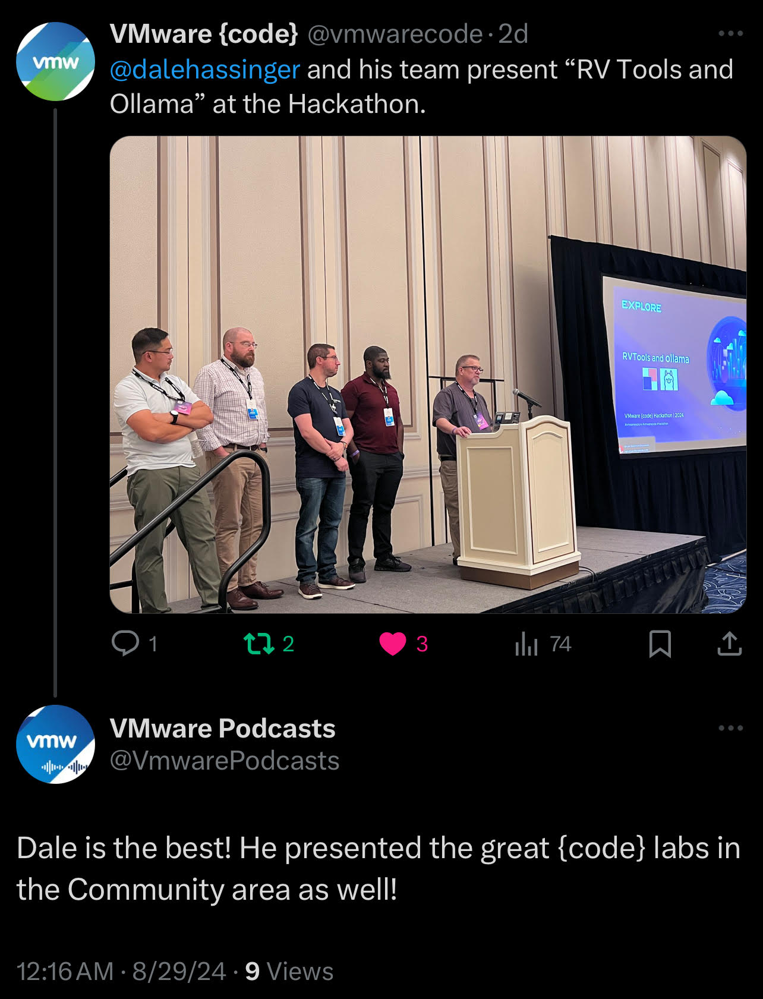
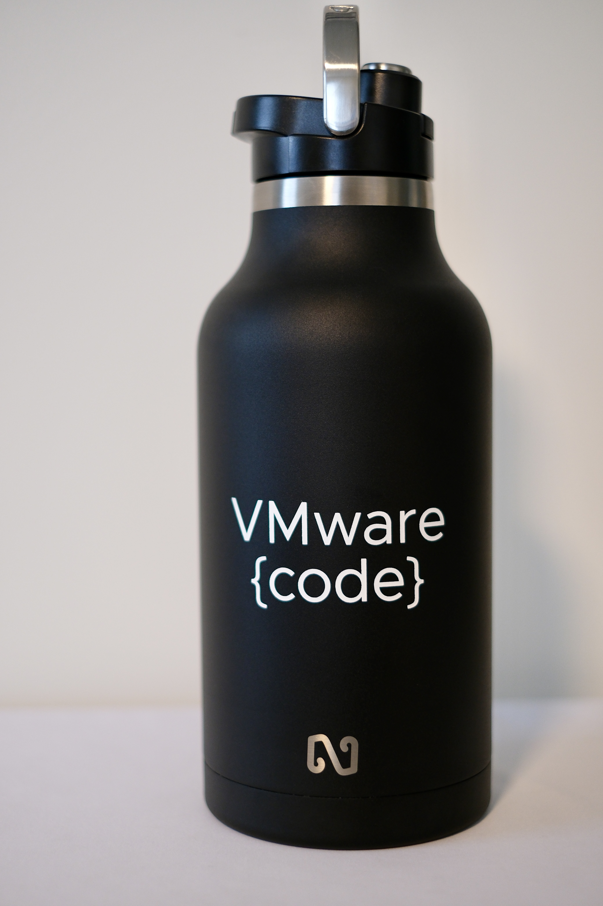
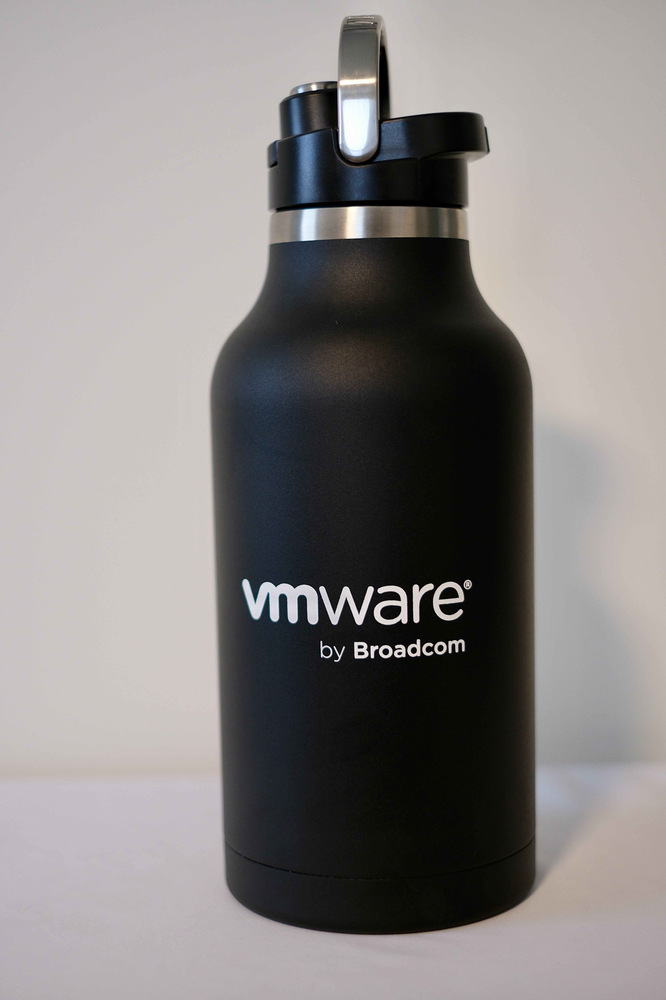

VMware Explore 2024 | My Insights, Session Recording Links and PICs

VMware Explore 2024 was the best conference that I've ever attended.
Hock Tan's message to VMware customers was clear: "Your Success represents Our Success!"
VMware Explore 2024
As a customer attending VMware Explore, I always thought about presenting and sharing the knowledge I've gained from working with VMware products with the vCommunity. This year, that thought became a reality. I presented one general session, three {code} theater sessions, and presented or co-presented seven {code} lab sessions. Presenting all day at a technology conference leaves you exhausted by the end of the day!
One of my sessions, 'Maximizing VMware Workstation/Fusion for Business, Education, and Home Labs' (CODE1162LV), was highlighted in an article by Virtualization and Cloud Review, and it received positive feedback."
"One session that I got a lot out of was a VMware Code session entitled "Maximizing VMware Workstation/Fusion for Business, Education, and Home Labs" [CODE1162LV]. The presenter, Dale Hassinger, VCF Specialist Architect, Broadcom, showed how to work with VMware Workstation using APIs, something that I have never done before but plan on doing so after attending his session." - Virtualization and Cloud Review
Being the only session mentioned by name in the Virtualization and Cloud Review article was a proud moment for me as a presenter. We put a lot of time and effort into our presentations, so receiving recognition from a writer for Virtualization and Cloud Review feels really good.
I enjoy presenting in the {code} Theatre because those sessions were where I learned a lot as a customer, and I want to give back to the {code} community. I also enjoy working with Franky Barragan, the VMware {code} Community Manager. When you talk with Franky, you can hear the passion he has for the {code} community in every conversation. Franky also did an awesome job organizing the Hackathon!
This year, I had the opportunity to co-present with a customer, Don Horrox. Don is a systems engineer, and the team he works with has implemented some impressive use cases with the VCF Automation and Operations products. Our session received excellent survey reviews. Don and his teammate, Amos Clerizier, were also part of my Hackathon team. They had a great time and contributed a lot of fantastic ideas. Amos wrote a powerful script that takes RVTools data, de-identifies it, sends it to ChatGPT for prompts, and then re-identifies the data to display the results. One of the judges even referred to this process as HybridAI.
Hackathon
The Hackathon was another highlight of the event for me. I served as a team captain, and we finished in 2nd place with our team, 'RVTools and Ollama'. This marks the second year in a row that I've secured 2nd place as a team captain. Our Hackathon team used a GitHub repository to share ideas, discussions, and code. Click here to see what we were able to 'hack'.
Every time I've been involved in the Hackathon, I've met people with amazing ideas. After the Hackathon, we usually stay in touch through social media or direct communication. These friendships are ones that will last a lifetime.
I had the opportunity to meet several of my colleagues in person, which is always a great experience. It was nice to shake hands and personally thank them for all the help they've provided over the past year. One evening, I had a nice dinner with Cosmin Trif, one of the best co-workers I've had in my career. He has been helping me since my days as a VMware customer. My whole VCF Specialists Team is an awesome group!
1:1 meetings with PMs
VMware Explore provides VMware customers with the opportunity to talk directly with product managers, and these face-to-face meetings, whether as a customer or an employee, have always been valuable. This year, I attended one of these meetings to discuss VCF operations. During the discussion, the customer got a sneak peek at the VCF 9 UI. They were impressed and had nothing but positive comments about the product's direction.
Venetian Conference Center
The Venetian Conference Center is great because it offers the convenience of having everything under one roof. The rooms are comfortable, and the conference food for breakfast and lunch was particularly good this year. There are also plenty of options for a nice dinner. I had dinner at Delmonico one evening, and as always, the food was excellent.
My VMware Explore 2024 Sessions
When and Where:
Website: VMware Explore 2024.
Las Vegas Date: August 26 – 29, 2024
The Venetian Convention and Expo Center
If you attended my VMware Explore Sessions and want to watch the recordings again, here are the links. If you were unable to attend VMware Explore, feel free to click these links to see what you missed. The Session IDs are links to the recordings.
Session Recordings:
- Streamlining Healthcare with Automation: How VMware Can Help | INDB1917LV
- In this session, learn to elevate your automation game. Join us to discover practical strategies for boosting your team's efficiency. 1) Automate Windows and Linux VM builds 2) Streamline Day 2 tasks like snapshots and reboots 3) Enhance security incident management by configuring Aria Operations for Logs to alert on log analysis, and 4) Automate snapshot deletion and power operations using Aria Operations Automation Central.
- Session Survey Feedback - What would you improve about the session?
- "Very informative and got my creative juices going."
- "Positives with showing real world experience"
- "Nothing, Dale and Don gave great real world examples and I walked away with actionable knowledge I can use to improve my own VMware environment."
- "I am a little more open to the snapshot cleanup feature and server decommissioning."
- "Had a great time!"
- "Great presentation"
- Session Survey Feedback - What would you improve about the session?
- In this session, learn to elevate your automation game. Join us to discover practical strategies for boosting your team's efficiency. 1) Automate Windows and Linux VM builds 2) Streamline Day 2 tasks like snapshots and reboots 3) Enhance security incident management by configuring Aria Operations for Logs to alert on log analysis, and 4) Automate snapshot deletion and power operations using Aria Operations Automation Central.
- Transform VCF Automation Inputs to ABX and Orchestrator Workflow Variables | CODE1164LV
- Master the art of converting any VCF Aria Automation template input into a dynamic variable for ABX or Orchestrator Workflows. This session will guide you through the process of turning inputs into versatile properties, ready to be integrated as parameters for any script. Unlock the potential to automate virtually any task within your infrastructure. By the end of this session, you'll realize that your creativity in variable use is the most powerful automation tool at your disposal.
- Session Survey Feedback - What would you improve about the session?
- "Nothing this is one of the best sessions and speakers available"
- Session Survey Feedback - What would you improve about the session?
- Master the art of converting any VCF Aria Automation template input into a dynamic variable for ABX or Orchestrator Workflows. This session will guide you through the process of turning inputs into versatile properties, ready to be integrated as parameters for any script. Unlock the potential to automate virtually any task within your infrastructure. By the end of this session, you'll realize that your creativity in variable use is the most powerful automation tool at your disposal.
- Maximizing VMware Workstation/Fusion for Business, Education, and Home Labs | CODE1162LV
- Explore the versatility of VMware Workstation and Fusion for diverse applications within your setup. Discover my personal methodology for leveraging Workstation/Fusion to evaluate software on virtual machines, conduct nested ESXi for educational purposes, or operate Linux VMs on Windows or Mac laptops. Delve into the included Workstation/Fusion APIs as a resource for automation education. I'll demo PowerShell Functions I developed, using the APIs, for efficient VM management on Workstation/Fusion.
- Session Survey Feedback - What would you improve about the session?
- "Great information. Should keep on presenting this information."
- Session Survey Feedback - What would you improve about the session?
- Explore the versatility of VMware Workstation and Fusion for diverse applications within your setup. Discover my personal methodology for leveraging Workstation/Fusion to evaluate software on virtual machines, conduct nested ESXi for educational purposes, or operate Linux VMs on Windows or Mac laptops. Delve into the included Workstation/Fusion APIs as a resource for automation education. I'll demo PowerShell Functions I developed, using the APIs, for efficient VM management on Workstation/Fusion.
- Integrate status.broadcom.com Alerts into VCF via Tailored Management Pack | CODE1161LV
- Discover the process of building a custom VCF Aria Operations Management Pack for displaying and alerting on VMware and Broadcom components. Utilize data from status.broadcom.com to transform Aria Operations into your central management hub. Plus, gain insights into both upcoming and past Notices for the tracked services. The session will feature demonstrations of customized Dashboards, Views, and Alert configurations.
- Session Survey Feedback - What would you improve about the session?
- "None - instructor did a great job with the time allowed."
- "Great presentation. Wished the session was longer to get more details."
- Session Survey Feedback - What would you improve about the session?
- Discover the process of building a custom VCF Aria Operations Management Pack for displaying and alerting on VMware and Broadcom components. Utilize data from status.broadcom.com to transform Aria Operations into your central management hub. Plus, gain insights into both upcoming and past Notices for the tracked services. The session will feature demonstrations of customized Dashboards, Views, and Alert configurations.
- {code} Lab: Advanced Lab Using ChatGPT To Write Powershell Automation | CODE2554LV (No Recordings of these Sessions)
- I also co-presented and presented several sessions in the {code} Labs with Eric Nielsen, where we demonstrated advanced ChatGPT prompting and how to use the OpenAI API. These sessions were fully booked every day.
Links to resources discussed is this Blog Post:
- VMware Explore 2024.
- All VMware Explore 2024 Recorded General Sessions
- All VMware Explore 2024 Recorded {code} Sessions
VMware Explore 2024 Video | See a brief shot of me doing one of my presentations in the {code} Theatre
VMware Community space in The Hub
VMware Explore 2024 Pics | Sessions, Hackathon, Swag, Prizes, More...
Sessions:








Hackathon:


Colleagues/Friends:

Swag/Prizes:




Final Thoughts:
I hope I get the opportunity to do it all again next year. VMware Explore is always one of my favorite weeks of the year. I appreciate the chance to give back to the vCommunity, which I believe is incredibly strong. I've never encountered another user group where the members are as passionate about a product as the VMware community is.
I created a Google NotebookLM Podcast based on the content of this blog. While it may not be entirely accurate, is any podcast ever 100% perfect, even when real people are speaking? Take a moment to listen and share your thoughts with me!